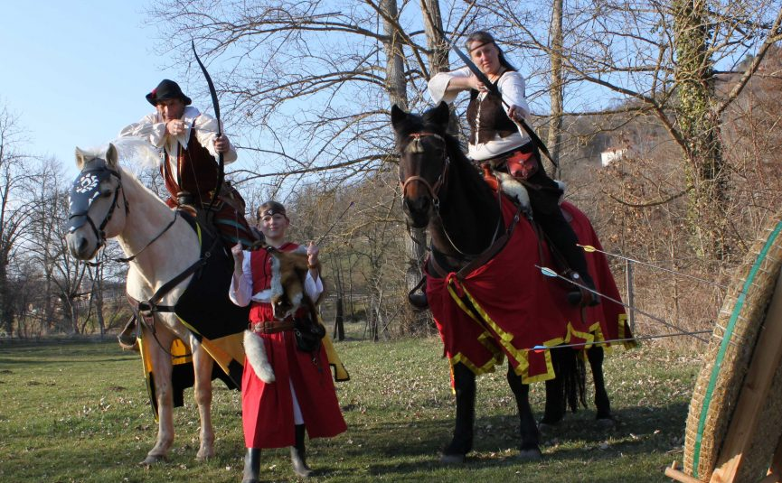
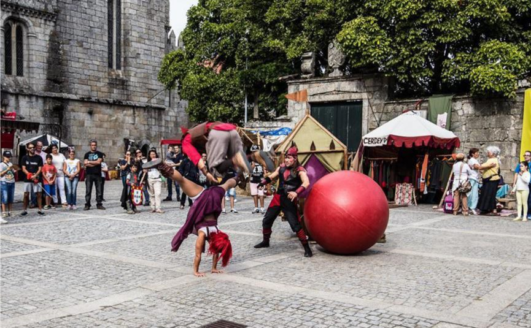

- Jeudi à 21h
- Vendredi à 21h
- Samedi à 15h et à 22h30
Horaires
Renaissance de la chevalerie : le tournoi des oubliés

Horaires
Tarif : 13€
Tarif réduit : 10€
Réservation et billetterie :
Une création inédite, en exclusivité pour la 37ème édition des Fêtes du Roi de l’Oiseau.
Petits et grands pourront assister à un tournoi de chevalerie des plus impressionnants ! Une histoire épique et très spectaculaire, grâce aux interventions hautes en couleurs de cavaliers hors pair et particulièrement efficaces ! Ne manquez pas cette occasion d’assister à un tournoi équestre inédit dans le cadre du Festival des Arts à la Renaissance, un grand moment de spectacle tout public avec parades et serment des chevaliers, jeux équestres guerriers, joutes à la longue lance, cascades, combats, coups de théâtre et rebondissements spectaculaires…
Pays du Velay, 16ème siècle… Le Moyen-âge s’en est allé, laissant place aux belles heures de la Renaissance. Bien qu’étant à son apogée, la chevalerie est en réalité au crépuscule de son ère. L’idéal chevaleresque, est au centre de tous les écrits, de chaque poème, au cœur même des politiques guerrières du royaume et ce, à l’heure même où François 1er observe avec intérêt l’expansion oppressante de l’empire de son voisin Charles Quint, ainsi que les perspectives prometteuses du Nouveau Monde. Pour autant, le monarque est un fervent défenseur de la chevalerie, de ses valeurs, de sa place dans la société, ainsi que dans sa stratégie militaire. Aussi afin de faire hommage au Roi, et surtout de trouver grâces à ses yeux, deux seigneurs, Rochefort et Bayart, connus pour être les meilleurs ennemis du monde mais aussi les plus illustres organisateurs de tournois, imaginent réunir les plus réputés des chevaliers du royaume lors d’un grand tournoiement. Toutefois, les temps sont troubles car les alliances politiques se font et se défont aussi vite que la pluie succède au soleil, et il semblerait que le “pédigrée” de certains invités soit moins reluisant qu’il n’y parait… Nos deux compères, qui se réjouissaient à l’avance du prestige qu’ils pourraient revendiquer d’un tel évènement, se retrouvent face à l’orgueil mal placé et à la rancune tenace de certains chevaliers n’ayant pas pansé les plaies d’usages et querelles datant d’une autre époque : le moyen-âge ! Les seigneurs Rochefort et Bayart se retrouvent malgré eux face à un incident diplomatique majeur, au cours duquel la courtoisie et le beau geste semblent devoir laisser place à un affrontement brutal et à outrance… L’honneur et le respect des codes de la chevalerie suffiront-ils à calmer les esprits ? L’idéal chevaleresque peut-il être bafoué par l’orgueil et la vanité ? Tout ceci est-il vraiment arrivé par hasard…?
Les chevaliers de Terra Legenda
Horaires
Tarif : 8€
Tarif réduit : 5€
Réservation et billetterie :
Le Broc Terra Legenda et le Ranch des Orgues (Espaly) vous invitent à découvrir leurs talents de cavaliers lors de cette démonstration équestre ! Par ordre de François 1er, deux équipes de chevaliers concourent pour le titre… Pour cela, le fou du roi vous invitera à l’aider à désigner les vainqueurs grâce à des épreuves emblématiques de l’art équestre de la Renaissance : carrousel, combat à l’épée, bolasses de feu, tir à l’arc à cheval… Que le meilleur gagne !
Circo Renaissance - Spectacle saltimbanques acrobatiques
Horaires
Tarif : 8€
Tarif réduit : 5€
Réservation et billetterie :
Farceurs et acrobates, amuseurs et poètes, le trio Malatitsch et les Saltimtowers aux talents élastiques, s’en viennent le cœur léger depuis le Portugal réaliser des performances à vous donner des courbatures, des acrobaties improbables, des contorsions tortueuses et d’autres équilibres impossibles, le tout soutenu par une musique ensoleillée. Un pur moment de cirque à la mode Renaissance !
NOUVEAU : le Roi de l’Oiseau s’invite pour la première fois au Théâtre du Puy… Un magnifique écrin en plein cœur des Festivités.
1515, Marignan…la Bataille

Horaires
Tarif : 10€
Tarif réduit : 7€
Réservation et billetterie :
La guerre gronde entre François 1er et Charles Quint… Si certains rêvent de s’y illustrer, d’autres y voient surtout le moyen de faire fortune, et quoi de plus juteux que le trafic d’armes…
1515 Marignan… la bataille ! conte de façon humoristique et un brin gaillarde les bonnes fortunes et les déboires de personnages particulièrement truculents. Cette petite fable satirique sur les « à-côtés » de la guerre trouve sa forme dans l’inspiration que lui apportent Rabelais, Clément Janequin et la fameuse Commedia Dell Arte. Spectacle tragi-comique, il manie la drôlerie parfois un tantinet grivoise (dans l’esprit de l’époque !) et l’humour que ne saurait renier le sieur François Rabelais. Il s’inscrit dans la pure tradition du théâtre populaire de la Renaissance, avec un style qui s’appuie sur la gestuelle et les masques de la Commedia Dell’arte.
Artisan drapier et bourgeois plus qu’honorable, Maître Gerphanhon amasse grande quantité de deniers car en sus de son commerce de façade, il se livre en secret à un trafic d’armes qui approvisionne les belligérants des deux camps. Son valet, Cocobé, vilain sans le sou et malchanceux, rêve quant à lui de s’engager dans les armées afin de faire fortune et de pouvoir ainsi conquérir Loretta, la servante leste et dégourdie du marchand de drap. Quelques jours avant la célèbre bataille, dans la bonne ville du Puy Sainte Marie, loin du fracas des champs de bataille, on achète et on marchande âprement quantité d’armes en tous genres qui trouveront leurs usages dans les combats…